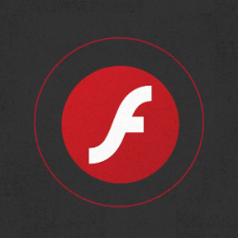

De ce website-urile in Flash nu urca in Google?
Anumiti webmasteri prefera sa aiba un website creat doar in Flash datorita graficii deosebite pe care o poseda. Desi website-ul este foarte atragator, Google nu-l poate indexa, de aceea, este putin probabil ca acel website sa ajunga in primele rezultate la cautarile Google lansate de utilizatori.
Care este problema cu website-urile in Flash ?
Un Flash este format dintr-o succesiune de poze si text care se deruleaza ca un film si care permite interactiunea dinamica cu utilizatorul (de exemplu, la un click pe o anumita zona din Flash-ul respectiv, se deschide o noua pagina etc.). Fiind asemanator cu un film rulat de browser (Mozilla, Internet Explorer, Google Chrome etc.), continutul Flash nu poate fi indexat de motoarele de cautare pentru ca textul si link-urile din continutul Flash-ului nu pot fi extrase si interpretate de motorul de cautare.
Ideea este ca website-urile urca in Google si sunt afisate la cautarile lansate de utilizatori in baza a 2 elemente principale:
Textul care formeaza continutul website-ului, si care trebuie creat astfel incat sa raspunda unui numar semnificativ de criterii, in functie de website-urile concurente, printr-un proces de optimizare site; si
Link-urile de pe alte website-uri care pointeaza catre website-ul tau. Aceste link-uri trebuie create pe website-uri cu page rank ridicat, si pot fi: Submisii RSS Feed, Submisii site bookmarking, Bloguri, Comentarii pe bloguri, Comentarii pe forumuri, Pagini pe retele de socializare (Facebook, Twitter etc.). Aceste link-uri se creeaza printr-un proces continuu de promovare site.
Daca intreg website-ul tau este conceput in Flash, atunci poti sa fii sigur ca motoarele de cautare nu pot citi si indexa pana la 95 % din continutul acestuia. Google a oferit anumite motive cu privire la acest aspect:
Motoarele de cautare indexeaza si interpreteaza continut bazat pe text. Acest lucru inseamna ca textul care este incorporat in poze sau Flash nu poate fi citit si indexat de Google. Continutul website-ului trebuie format din text simplu.
Este recomandabil ca tehnologiile Flash sau cele asemanatoare sa fie folosite numai in scop decorativ, iar HTML pentru continutul text si navigare (link-urile din website, meniuri etc.).
Adaugarea textului incorporat in Flash in tag-ul NOSCRIPT nu functioneaza
In mod teoretic, prin adaugarea continutului text aflat in poze si Flash, in tagul NOSCRIPT, motoarele de cautare citesc si indexeaza respectivul continut. Din nefericire, acest lucru nu este posibil, asa cum arata si declaratiile Google:
Una dintre problemele majore cu tagul NOSCRIPT este ca acest tag a fost folosit in mod abuziv de spamm-eri, de aceea motorul de cautare manifesta reticenta in indexarea acestui continut. De aceea, daca este vorba de un text extrem de important pentru website, este mai bine ca acesta sa fie afisat normal, vizibil, ca text static pe continutul paginii web.
Ce inseamna aceste lucruri pentru un site de prezentare?
Daca doresti sa ai un numar rezonabil de vizitatori din motoarele de cautare in urma cautarilor, nu utiliza Flash-ul sau alte elemente multimedia pentru continutul text al website-ului tau.
Foloseste Flash-ul sau alte elemente multimedia numai pentru scop decorativ.
Navigarea in website trebuie conceputa strict in HTML, prin link-uri de tipul a href. Nu utiliza meniuri de navigare intre pagini prin tehnologia Flash sau JavaScript. Cele mai multe motoare de cautare nu pot indexa aceste link-uri deosebit de importante pentru un ranking ridicat.
Continutul website-ului trebuie scris cu text simplu sub forma de paragrafe, fara ca textul sa fie incorporat in imagini sau Flash.